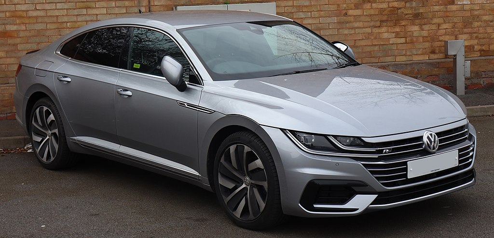

<html>
<!DOCTYPE html>
<html lang="en">
<head>
    <meta charset="UTF-8">
    <meta http-equiv="X-UA-Compatible" content="IE=edge">
    <meta name="viewport" content="width=device-width, initial-scale=1.0">
    <title>Volkswagen</title>
    <link rel="stylesheet" href="/carstar/DESIGNS/allfiles.css">
    <script src="/carstar/java/java.js"></script>
</head>
<body>
    
</body>
</html>

<body>
    <a href="/carstar">
        </a>
            <nav id="navi" class="navbar">
                <ul>
                    <li><a href="/" class="allbrands">ALL BRANDS</a></li>
                    
                    <li><a href="/carstar">LISTS</a></li>
                </ul>
            </nav>
    </header>
    <!-- article -->
    <article class="left">

        <h1> VOLKSWAGEN </h1>
        <p>Volkswagen is a German motor vehicle manufacturer headquartered in Wolfsburg, Lower Saxony, Germany. Founded in 1937 by the German Labour Front under the Nazi Party and revived into a global brand post-World War II by the British Army Officer Ivan Hirst, it is known for the iconic Beetle and serves as the flagship brand of the Volkswagen Group, the largest automotive manufacturer by worldwide sales in 2016 and 2017. The group's biggest market is in China, which delivers 40 percent of its sales and profits. Its name is derived from the German-language terms Volk and Wagen, translating to "people's car" when combined.
</p>
        
        
      <p>Volkswagen was established in 1937 by the German Labour Front (Deutsche Arbeitsfront) in Berlin.[5] In the early 1930s, cars were a luxury – most Germans could afford nothing more elaborate than a motorcycle and only one German out of 50 owned a car. Seeking a potential new market, some car makers began independent "people's car" projects – the Mercedes 170H, BMW 3/15, Adler AutoBahn, Steyr 55, and Hanomag 1.3L, among others.</p>
<p>
The growing trend was not nascent; Béla Barényi, a pioneering automotive engineer, is credited as already having conceived the basic design during the mid-1920s. Josef Ganz developed the Standard Superior (going as far as advertising it as the "German Volkswagen"). In Germany, the company Hanomag mass-produced the 2/10 PS "Kommissbrot", a small, cheap rear-engined car, from 1925 to 1928.[6] Also, in Czechoslovakia, the Hans Ledwinka designed Tatra T77, a very popular car amongst the German elite, was becoming smaller and more affordable at each revision. Ferdinand Porsche, a well-known designer for high-end vehicles and race cars, had been trying for years to get a manufacturer interested in a small car suitable for a family. He built a car named the "Volksauto" from the ground up in 1933, using many popular ideas and several of his own, putting together a car with an air-cooled rear engine, torsion bar suspension, and a "beetle" shape, the front bonnet rounded for better aerodynamics (necessary as it had a small engine).
</p>

<p>In 1934, with many of the above projects still in development or early stages of production, Adolf Hitler became involved, ordering the production of a basic vehicle capable of transporting two adults and three children at 100 km/h (62 mph). He wanted a car every German family would be able to afford.[7] The "People's Car" would be available through a savings plan at 990 ℛℳ (US$396 in 1938)—about the price of a small motorcycle (the average income being around 32 ℛℳ a week).

</p>

    </article>

    <!-- aside -->
    <aside class="right">
        <div id="basics">
            <h2>The Basics</h2>
            <ul>

                <li>Founded: 28 May 1937; 85 years ago</li>
                <li>Founder: German Labour Front</li>
                <li>Country: Germany</li>
               
            </ul>
        </div>
        <a href=""></a>
        <h2>Volkswagen Logo</h2>
        <p>
          Though the Volkswagen car logo can appear in various colors, depending on the nature of the marketing or branding campaign in question, the most common colors are blue and white. The colors of white and blue are often associated with purity, strength, vision, and reliability.

Perhaps unsurprisingly, the Volkswagen emblem is based on the name of the company, which translates from German to “car of the people”.


</p>
    </aside>
    <!-- images -->
    <section class="cover">

        <div class="box"> 
            <a href="https://www.volkswagen.co.in/en/models/taigun.html " target="_blank"></a>
            <h4> Volkswagen Tiguan</h4>
            <p>The Volkswagen Tiguan is a car produced by German manufacturer Volkswagen since 2007, sitting between the smaller T-Roc and the larger Touareg in the company's crossover SUV range. The first generation is based on the PQ46 platform, while the second generation, released in 2016, utilizes the Volkswagen Group MQB A2 platform. It is generally considered to be a medium-sized SUV in Europe, while in North America it is considered to be a compact crossover.
</p>
            
        </div>
        <div class="box">
            <a href="https://www.volkswagen-newsroom.com/en/images/detail/world-record-run-by-volkswagen-w12-in-nardo-1741"></a>
            <h4>W12 Nardò</h4>
            <p>In 2001, at the Tokyo Motor Show, Volkswagen Group released their most powerful W12 sports car concept yet, in bright orange (then also known as the W12 Nardò, referring to the Nardò Ring vehicle test track near the Italian city of Nardò). The engine was rated at 441 kW (600 PS; 591 bhp) and 621 N⋅m (458 lbf⋅ft) of torque; it could accelerate from a standstill to 100 km/h (62 mph) in about 3.5 seconds, and had a top speed of 357 km/h (221.8 mph), weighing 1,200 kg (2,646 lb).
</p>
            
        </div>
        <div class="box">
            <a href="https://www.volkswagen-newsroom.com/en/phaeton-3628"></a>
            <h4>The Volkswagen Phaeton </h4>
            <p>The Volkswagen Phaeton is a full-size luxury sedan/saloon manufactured by the German automobile manufacturer Volkswagen, described by Volkswagen as their "premium class" vehicle.[1][2] Introduced at the 2002 Geneva Motor Show, the Phaeton was marketed worldwide. Sales in North America ended in 2006 and global sales ended in 2016.</p>
                <p>
The name Phaeton derives from Phaëton, the son of Phoebus (or Helios) in Greek mythology, by way of the phaeton auto body style and the type of horse-drawn carriage that preceded it.
</p>
        </div>
        
        
    </section>
    <section class="cover">

        <div class="box"> 
            <a href="https://www.volkswagen-newsroom.com/en/beetle-3596" target="_blank"></a>
            <h4>The Volkswagen Beetle</h4>
            <p>The Volkswagen Beetle—officially the Volkswagen Type 1, informally in German der Käfer (meaning "beetle"), in parts of the English-speaking world the Bug, and known by many other nicknames in other languages—is a two-door, rear-engine economy car, intended for five occupants (later, Beetles were restricted to four people in some countries), that was manufactured and marketed by German automaker Volkswagen (VW) from 1938 until 2003.
</p>
        </div>
        <div class="box">
            <a href="https://www.vw.com/en/models/atlas-cross-sport.html"></a>
            <h4>The Volkswagen Atlas</h4>
            <p>The Volkswagen Atlas is a mid-size crossover SUV manufactured by the German automaker Volkswagen since 2017. Developed mainly for the North American and Chinese market, the vehicle is based on the Volkswagen Group MQB platform. Outside the North American market, the vehicle is marketed as the Volkswagen Teramont. It is positioned above the long-wheelbase Tiguan and below the smaller but upscale Touareg.
</p>
        </div>
        <div class="box">
            <a href="https://www.vw.com/en/models/arteon.html"></a>
            <h4>The Volkswagen Arteon</h4>
            <p>The Volkswagen Arteon is a car manufactured by German car manufacturer Volkswagen. Described as a large family car or a mid-size car, it is available in five-door liftback or estate body styles. The Arteon was unveiled on 6 March 2017, at the Geneva Motor Show, and at the Chicago Auto Show for the North American market. It is direct successor to the CC; however, Volkswagen announced that the Arteon is positioned to be more upmarket than the CC. The vehicle is based on the MQB platform.
 </p>
        </div>
         
        
   

</body>


</html>